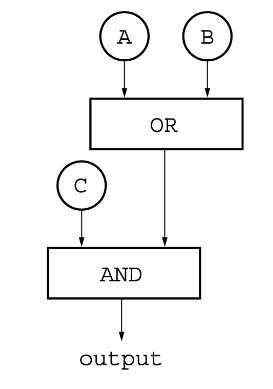

The diagram below shows a circuit composed of two logic gates labeled OR and AND. Each gate takes two inputs and produces a single output.

If the inputs A and C are both true, which of the following best describes the output of the AND gate?